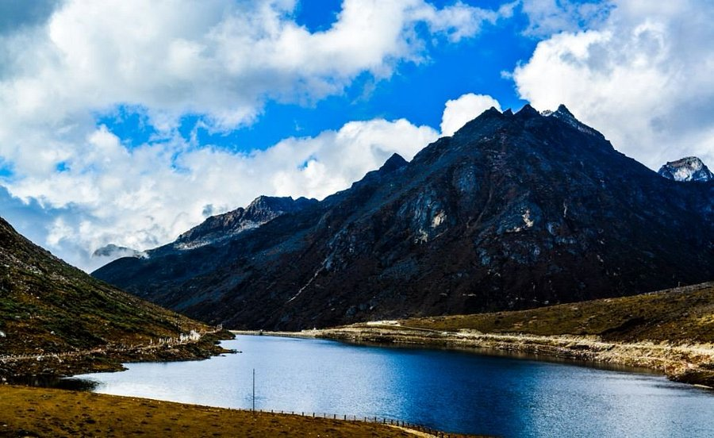
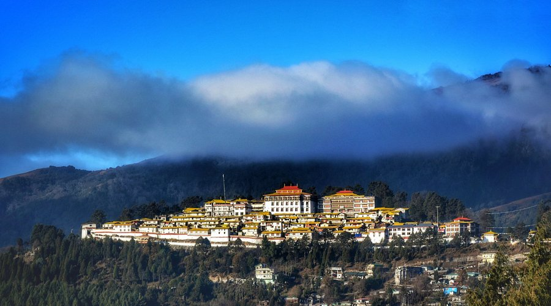
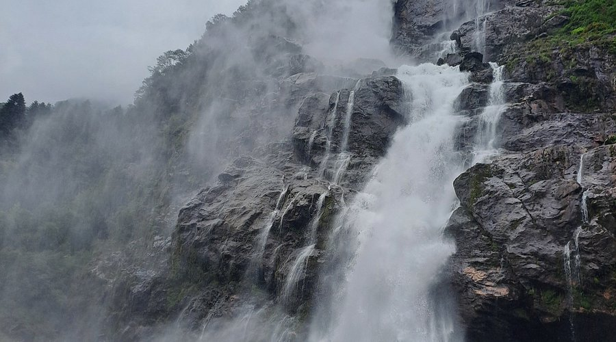

Famous Places
Sela Pass
The Sela Pass is a high-altitude mountain pass located on the border between the Tawang and West Kameng districts in the Indian state of Arunachal Pradesh. It has an elevation of 4170 m and connects the Indian Buddhist town of Tawang to Dirang and Guwahati. The pass carries the National Highway 13 , connecting Tawang with the rest of India. Sela Lake, near the summit of the pass, is one of approximately 101 lakes in the area that are sacred in Tibetan Buddhism. While Sela Pass does get heavy snowfall in winters, it is usually open throughout the year unless landslides or snow require the pass to be shut down temporarily. Sela pass is one of the highest motorable mountain passes in the world
Tawang Buddhist Monastery
Tawang Monastery is a Buddhist monastery located in Tawang, Arunachal Pradesh, India. It is the largest monastery in the country. It is situated in the valley of the Tawang Chu, in close proximity to the Chinese and Bhutanese border. The monastery is three stories high. It is enclosed by a 925 feet (282 m) long compound wall. Within the complex there are 65 residential buildings.
Gorichen Peak
Gori Chen is a glacier-fed mountain group in the Eastern Himalayas. Peaks include the third highest peak in northeast India. It is among the mountains of India that is popular for expeditions and trekkers. Gori Chen provided for training to the 19 Kumaon before its deployment in Siachen in the 1980s.
Mayodiya Pass

Mayodia Pass (2,655 metres elevation), 56 km from Roing in Dibang Valley district of Arunachal Pradesh state in India, is a popular local tourist attraction due to the November to March winter snow fall which is heaviest in January and February.